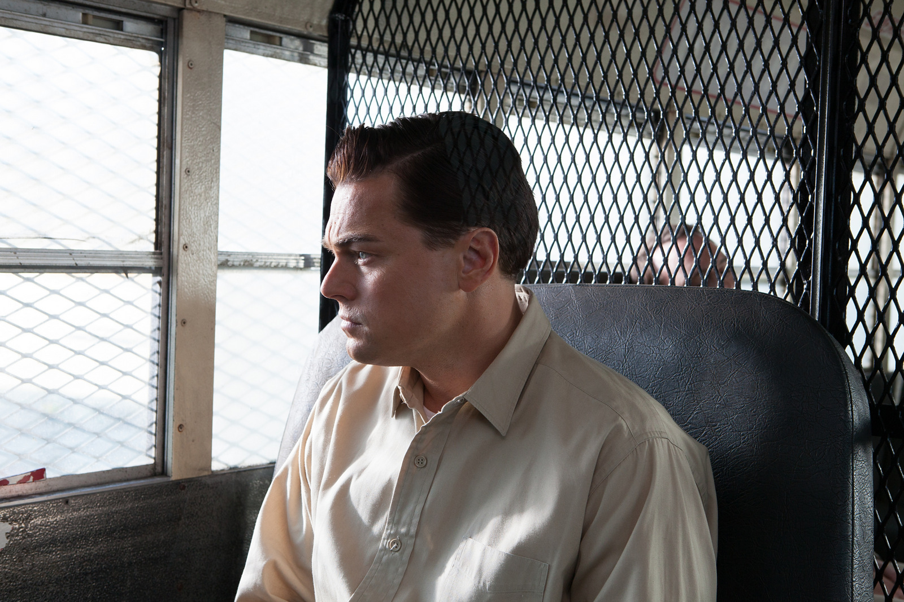
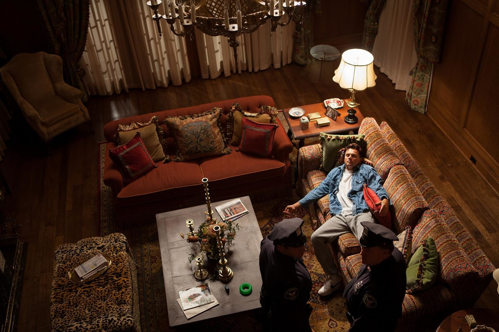

Повествование фильма начинается в 1987 году. Джордан Белфорт (Леонардо Ди Каприо) становится брокером в успешном инвестиционном банке L.F. Rothschild. Его босс, Марк Ханна (Мэттью Макконахи), советует ему начинать распутный образ жизни, дабы «заставить кровь бегать быстрее», и принимать кокаин. Вскоре банк закрывается после внезапного обвала индекса Доу — Джонса.

По совету жены Терезы (Кристин Милиоти) Джордан устраивается в небольшое заведение, занимающееся мелкими акциями. Его настойчивый стиль общения с клиентами и врождённая харизма быстро дают свои плоды. Он знакомится с соседом по дому Донни (Джона Хилл), торговцем, который сразу находит общий язык с Джорданом и решает открыть с ним собственную фирму. В качестве сотрудников они нанимают нескольких друзей Белфорта, его отца Макса (Роб Райнер) и называют компанию «Стрэттон Оукмонт». Журнал Forbes в своей статье называет Джордана «Волком с Уолл-стрит».
Джордан, как и «завещал» Ханна, в свободное от работы время прожигает жизнь: лавирует от одной вечеринки к другой, употребляет множество наркотических препаратов. Быстрым обогащением Белфорта начинает интересоваться агент ФБР Патрик Дэнем (Кайл Чендлер). На одной из вечеринок Белфорт знакомится с моделью Наоми (Марго Робби), с которой у него вскоре развивается роман, приведший к разводу с женой. Джордан делает Наоми предложение и спустя некоторое время у них рождается дочь Скайлар.

ФБР продолжает расследование, в дело вступает Комиссия по ценным бумагам и биржам. После проведения первичного публичного размещения компании торговца женской обувью Стива Мэддена (Джейк Хоффман[en]) Джордан зарабатывает дополнительные 22 миллиона долларов. Дабы спрятать деньги, Белфорт открывает счёт в швейцарском банке на имя тёти Наоми, Эммы (Джоанна Ламли). Афера разоблачается из-за нелепых действий Донни.
Проходит два года. Дэнем арестовывает Белфорта прямо во время съёмки рекламного ролика. Во Флориде банкир Жан-Жак Саурель (Жан Дюжарден), согласившийся помочь Джордану в его мошенничестве, рассказывает ФБР все подробности дела. Так как доказательств против него огромное количество, Джордан соглашается помочь федеральным агентам в сборе улик на своих бывших коллег. В это же время Наоми, разочарованная положением дел Белфорта и его ничтожным и убогим психофизическим состоянием, сообщает ему, что хочет подать на развод и забрать с собой ребёнка.

На следующее утро Белфорт надевает подслушивающий микрофон, спрятанный под одеждой, и направляется на встречу с Донни. Запиской он предупреждает его, чтобы тот следил за словами — на нём микрофон. После встречи о записке узнаёт Дэнем, помещающий Белфорта под стражу за нарушение их условий, после чего Белфорт принимает условия сделки. ФБР совершает рейд на «Стрэттон Оукмонт».
За сотрудничество с ФБР Белфорту снижают срок и приговаривают к трём годам лишения свободы. После освобождения он занимается семинарами по искусству торговли.